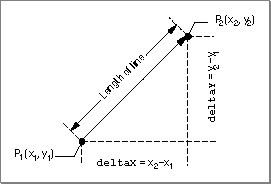

Performing Fixed-Point Operations
You can use QuickDraw GX functions to provide operations onFixed,long,fractandwidenumbers. The equivalent QuickDraw GX fixed-point functions for functions in the Macintosh Mathematical Utilities is shown in Table 8-2.The Macintosh Mathematical Utilities are described in Inside Macintosh: Operating System Utilities.
Some functions combine multiple functions into a single function to increase calculation speed over that obtained using sequential function calls. For example, the
FractSineCosinefunction returns both the sine and cosine of an angle.Some functions support the use of 64-bit numbers to increase the accuracy of calculations. For example, the
WideAddfunction returns the 64-bit sum of two 64-bit numbers, and theWideDividefunction returns the quotient of a 64-bit number and a 32-bit number. TheMultiplyDividefunction uses a 64-bit intermediate result to increase accuracy of the calculation and to prevent premature overflow.The
MultiplyDivide,Magnitude, andVectorMultiplyDividefunctions are derivatives of other functions. For example,MultiplyDivide (x, y, z)is the same as:wide temp; WideDivide (WideMultiply(x, y, &temp), z, 0)The final argument of 0 specifies that the returned number will be rounded with no remainder.You can use the
Magnitudefunction to determine the magnitude (length) of a two-dimensional vector, or the distance between two points on a plane. Figure 8-18 shows the use of function parametersdeltaXanddeltaY.Figure 8-18 Determining the length of a line with the
Magnitudefunction
Functions that provide arithmetic operations on fixed-point numbers are described in the section "Fixed-Point Operations" beginning on page 8-42. Functions that provide operations on
widenumbers are described in the section "Operations on wide Numbers" beginning on page 8-49. TheMagnitudefunction is described on page 8-45.